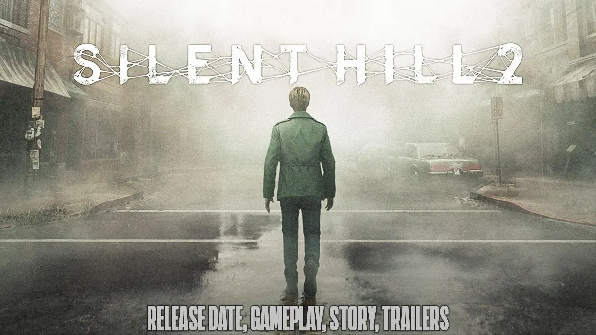

بعد تلقي رسالة غامضة من زوجته المتوفاة، يتوجه جيمس إلى بلدة سايلنت هيل، المكان الذي جمعهما بالكثير من الذكريات، على أمل أن يلتقي بها مرة أخرى. هناك، بالقرب من البحيرة، يلتقي بامرأة تشبه زوجته بشكل مخيف. استكشف مدينة سايلنت هيل الغامضة والمليئة بالضباب والأسرار، وواجه أجواء مرعبة وأعداءً مخيفين في تجربة رعب نفسي معاد تصميمها بالكامل. تقدم اللعبة رسومات وصوتًا أكثر تفصيلًا، وبيئات أوسع، ومنظورًا خلف الكتف، ونظام قتال مطورًا.
آراء ومراجعات اللاعبين